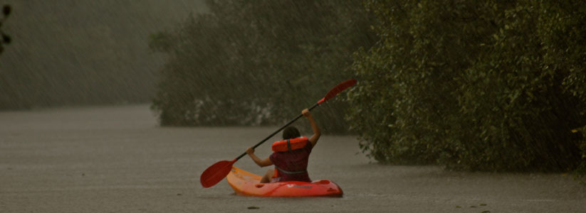
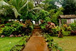
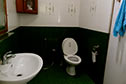
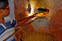
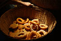
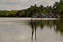
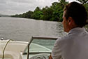
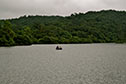

Trip Overview
Far from the beaches and reveling crowds of Goa, India Untravelled invites you for a slice of a real Goan paradise. You stay with three generations of a Goan family in their quaint ancestral Goan-Portuguese home, discover virgin backwaters on a kayak and speedboat, travel back in time to traditional bakeries and old Portuguese homes, and experience the susagade way of life in the charming, sleepy village of Aldona.
We recommend that you shed your pre-conceived notions of Goa on this trail. Mingle with your laid-back neighbors as they catch up on the village gossip, treat your taste buds to the delights of home-cooked Goan cuisine, let your hosts regale you with stories of the Portuguese times gone by, feel liberated as you ride a bicycle or motorbike through the lush interiors of North Goa, discover ancient rock-cut caves, breathtaking waterfalls and pristine lakes, go street shopping at the local market, participate in traditional festivals and family gatherings… and live like a Goan for a few days!
Please email us at untravel@indiauntravelled.com to plan and book your travels.
Trip Highlights
Stay at a 500-year-old Goan-Portuguese home: Live like a local, with three generations of the Amaral family in the outhouse cottage of their ancestral home; it doesn’t take long to become part of the family here.
Kayak in the virgin backwaters: Flex those muscles and kayak through the untouched riverine backwaters of Aldona, maneuvering your way through mangroves.
Village trip: Join your hosts to explore Aldona’s best-kept secrets: a fort where a brave Portuguese female traveller was captured, old fishing bridges, the legends of the village church and cemetery.
Goan breads at a traditional bakery: You’ll be one of the lucky few to take in the tempting aromas of freshly baked Goan bread, as it is taken out hot from the life-sized earthen oven, the only traditional one remaining in these parts. Bite in with melting butter!
Mountain biking: Ride amid the lush interiors, old Portuguese homes and rice paddies of Aldona. Famous authors and poets have never been able to leave this postcard village!
Home-cooked Goan cuisine: Indulge in Raquel’s traditional Goan and fusion continental recipes, and mouth-watering desserts. The ancient in-house well is the source of pure drinking water in this house!
Speedboat along Aldona River: Whizz on your own private speedboat through the Aldona River, spotting crocodiles, peacocks, eagles, kingfishers and other wildlife. Between October and March, hit the Arabian Sea to scout for dolphins!
Secret caves, lakes and waterfalls: Embark on a day trip to explore Asia’s oldest rock-cut caves, paddle boat on a lesser-known lake, and wade under a magnificent waterfall.
Please email us at untravel@indiauntravelled.com to plan and book your travels.
Brief Itinerary
The Goa Away from The Beaches trail is perfect for those who want to ditch the beaches and crowds of Goa, experience life as a local and discover Goa’s best kept secrets. This trail can be customized based on your travel days and interests.
Days 1: Meet the family. Explore Aldona on mountain bikes
The Goa Away from the Beaches experience can start at Panjim Airport, which is connected to the rest of India by domestic flight connections. Or at the Thivim station in North Goa. A pickup can be organized if required, or you can hop into a local bus or taxi.
Your homestay with the Amaral family is located in the sleepy little village of Aldona, deep in the interiors of North Goa. This Goan-Portuguese house is atleast 500 years old, though the exact date of its construction remains unknown. You stay in one of two private rooms in the outhouse cottage, with a common verandah, surrounded by the wilderness of trees and chirping birds, a few meters from the family home.
Spend time getting to know your hosts Roberto and Raquel, who have grown up in these parts, and are full of fascinating stories about life in Goa and how it has changed since the hippie era. Read, write, paint, draw, do the things you love, on the open terrace or lying on a hammock amid the greenery.
Cycle around Aldona on the in-house mountain bikes, or walk along the gentle terrain. Mingle with neighbors lounging outside their homes and locals working in their rice paddies. Grab a bite at the market, sneak a peek at the village church, walk through the cemetery, join locals fishing in the backwaters, and enjoy the tranquility far from the popular notions of Goa!
Day 2: Day trip: Arvalem waterfalls, rock-cut caves, Mayem Lake OR to Mapusa Market
Take a day trip to the fascinating Arvalem rock-cut caves, believed to be Asia’s oldest, yet completely off the tourist radar. Wade into the stunning high Arvalem waterfall. Row a paddleboat into the peaceful Mayem Lake. Or choose to visit the favorite street market of North Goans in the town of Mapusa, for a day of bargain hunting!
In the late afternoon, let your hosts give you an intimate glimpse into the village they call home. Stop by at the village church and cemetery, the Aldona fort, abandoned Portuguese homes, ancient bridges and swanky new ones, and end off at the region’s last remaining traditional bakery to watch (and devours) fresh breads being baked in a life-size earthen oven. The little joys of life in Goa!
Days 3: Kayak in the backwaters.Guided village trip
Just when you think Goa can’t surprise you any more, you are lowered onto your kayak and into a world that few are lucky enough to discover. Unlike the backwaters of Kerala, you’ll find no houseboats here – just you and an endless stretch of serenity. Paddle your way into small coves, navigate mangroves, discover little hamlets on the shores, spot birds and wildlife, go under the bridge to the junction of the backwaters with the river, and find yourself rowing towards a perfect Goan sunset.
Day 4: Optional trips
The Goa Away from the Beaches has been designed for maximum relaxation, with some unique discoveries for just the right balance.
If you feel like you want to pack in more, your options are aplenty:
Join your host Roberto for the trip of a lifetime: zooming on a speedboat through the uncharted backwaters of Goa! On this 1.5-hour trip, you take in a glimpse of secluded villages, intricate mangroves, pristine wilderness, eagles and kingfishers flying past, peacocks perched on trees, and even an Indian Mugger Crocodile if you’re lucky. Between October and March, you can choose to speedboat into the Arabian Sea to scout for dolphins, who swim through the these waters in winter. We time and plan the trip such that we are able to ditch most other charters heading to see the dolphins.
Go island hopping on a ferry. Rent a bike or car and drive through the less travelled river route via Pomburpa. Sample Goan dishes and urakh (feni’s lesser known cousin) at small family-run Goan eateries. Gamble the night away at the floating casino. Go for a night of music and dancing, Goan style. Feel the state of mind that is Goa.
On the last day of your trip (day 5), when you catch your flight or train home, you’ll be carrying a little bit of Goa in you.
Contact us at untravel@indiauntravelled.com to customize this trip or book your dates.
Please email us at untravel@indiauntravelled.com to plan and book your travels.
Costs
Costs depend on season, number of people and activities undertaken. Available on request.
Please email us at untravel@indiauntravelled.com to plan and book your travels.
Location:
Best time to visit
If you like the rains, the monsoon season from July to September is delightful in Goa, with lush interiors, fewer crowds, and an intimate Goan community feel. Days are hot and nights cool in the winter and spring months from October to April. The summer months of May and June are warm and humid.
Fitness
This trail is apt for people of all age groups and fitness levels, who want to interact with locals, get an intimate peak into the Goan way of life, discover the state’s lesser known secrets, and flex their cycling and kayaking muscles (though you don’t have to if you don’t want to)!
What to pack
Weather in tropical Goa is mostly hot and humid. Carry light, cool summer clothes, flip-flops, sunhat, sunscreen, essential medicines, and binoculars for bird watching, camera to capture some unforgettable moments, and anything else good for tropical weather. Goa is laid back and less conservative than the rest of India, even in its rural villages, so feel free to wear dresses and shorts! Don’t forget a good water bottle so you can refill fresh well water at your homestay instead of buying plastic mineral water bottles. If you’re travelling in the rains, carry an umbrella and poncho, and good mosquito repellant!
Please email us at untravel@indiauntravelled.com to plan and book your travels.
Gallery
The Homestay
- Entrance to the house
 The outhouse cottage
The outhouse cottage The ancestral house
The ancestral house Double room at the homestay
Double room at the homestay Twin room at the homestay
Twin room at the homestay - Attached western bathrooms


{kind=link}
{kind=link}
On the trail
- Fresh Goan breads sourced from a neighborhood bakery
- Freshly baked Goan breads at a neighborhood bakery
- Ferries at Pomburpa
- Speedboating on the backwaters of Aldona
- Boating on Mayem Lake
{kind=link}
{kind=link}
{kind=link}
{kind=link}
{kind=link}
Please email us at untravel@indiauntravelled.com to plan and book your travels.
Reviews
To feature your reviews about this trip, please email them to untravel@indiauntravelled.com
Please email us at untravel@indiauntravelled.com to plan and book your travels.
Responsible Travel
How this trip makes a difference:
- Over the years, the Amaral family has worked hard to preserve their Goan-Portuguese heritage and culture, and share it with travellers. Roberto and Raquel aim to re-introduce guests to the culture, history, charm, and lifestyle of Goa, which is slowly being eroded by mass tourism within the state.
- The current generation’s restoration work aims at restoring the original heritage, architecture and old-world charm of their house.
- Solar geysers are used to heat water, and refurbished antique furniture is used in the guest rooms.
- A concentrated effort is made to preserve the wilderness around, and grow or source organic vegetables, fruits and ingredients.
- The family actively participates in village affairs, and tries to effect better environment and waste management.
- The village trip aims to support the efforts of the local baker, who has continued to bake breads in the region’s last remaining traditional earthen oven, for over 50 years.
- The trail aims to introduce travellers to lesser known sites and attractions in Goa to help preserve its ancient heritage and pristine natural beauty.
- The revenues generated from this trip are reinvested to sustain efforts in heritage conversation, as well as to further the cause of responsible travel in India.
How you can make a difference on this trip:
- Take the time to interact with your hosts and think of yourself as a guest at a family home. Please don’t expect room service!
- Carry a good water bottle and ask to refill filtered drinking water at your accommodation. Refrain from buying numerous plastic mineral water bottles.
- Pack your bags with environmentally friendly things. Carry as little plastic as possible.
- Do not leave behind any non-biodegradable waste. Carry batteries and other toxic waste back to the cities where waste management is in place.
- Respect the local culture and refrain from physical intimacy in public places.
- Try local food as much as possible and avoid packaged food. Ask for modifications in the food according to your taste, instead of wasting it.
- Avoid excessive consumption of alcohol and refrain from drugs, especially in public places.
- Seek permission before photographing people, so their privacy is respected.
- Do not pluck any medicinal plants & flowers, and do not disturb the wildlife.
Please email us at untravel@indiauntravelled.com to plan and book your travels.
Please email us at untravel@indiauntravelled.com to plan and book your travels.